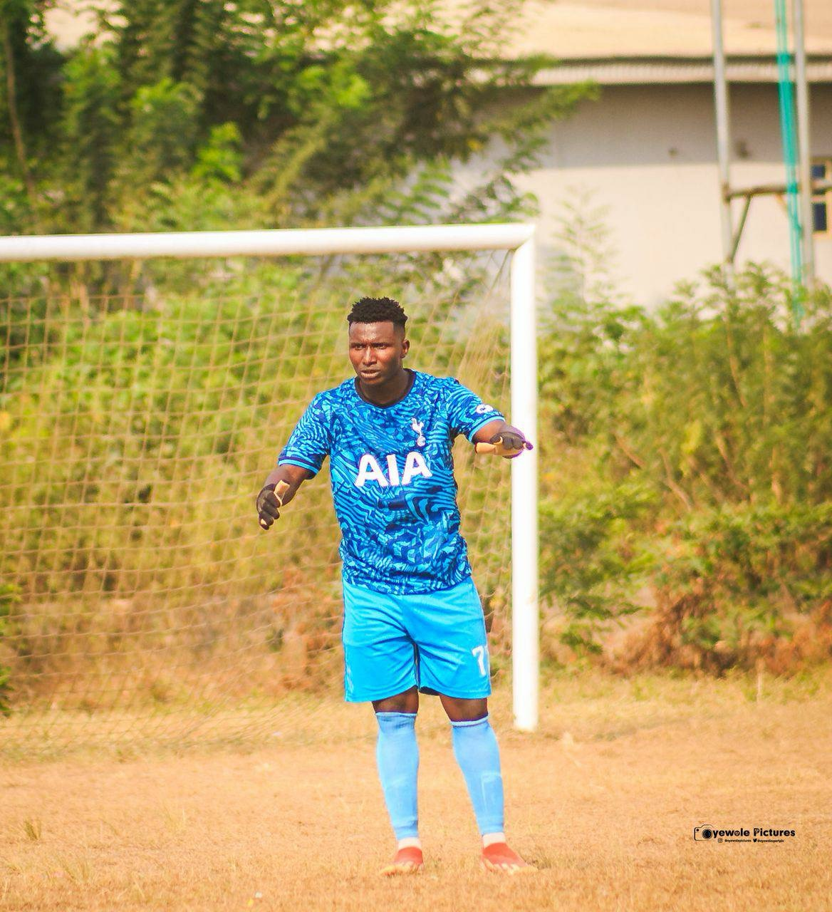

Our Coaches
The craft, taught properly
Goalkeeping is a craft of its own. We teach it with the discipline and patience the position demands.
Coaching staff

Akindeko Oluwatobi
Founder & Head Coach
Akindeko Oluwatobi started his goalkeeper career at age 15. Over the years he competed in many competitions and won numerous trophies — including the Milo competition Best Goalkeeper award. He founded Ilerioluwa Goalkeeper Training Center in 2025 to give the next generation of keepers in Ibadan access to modern, structured goalkeeper development.
Trained first-aider on site. A signed consent form is required for all keepers.
Our coaching standards
🛡️ Safeguarding first
Our Head Coach is child-protection and safeguarding trained. Parents are welcome at every session.
📈 Honest assessment
Parents get straight answers about their keeper's level and pathway — progress is measured at the end of every six-week block.
Want to coach with us? We're building Ibadan's best goalkeeper-coaching staff. Get in touch.